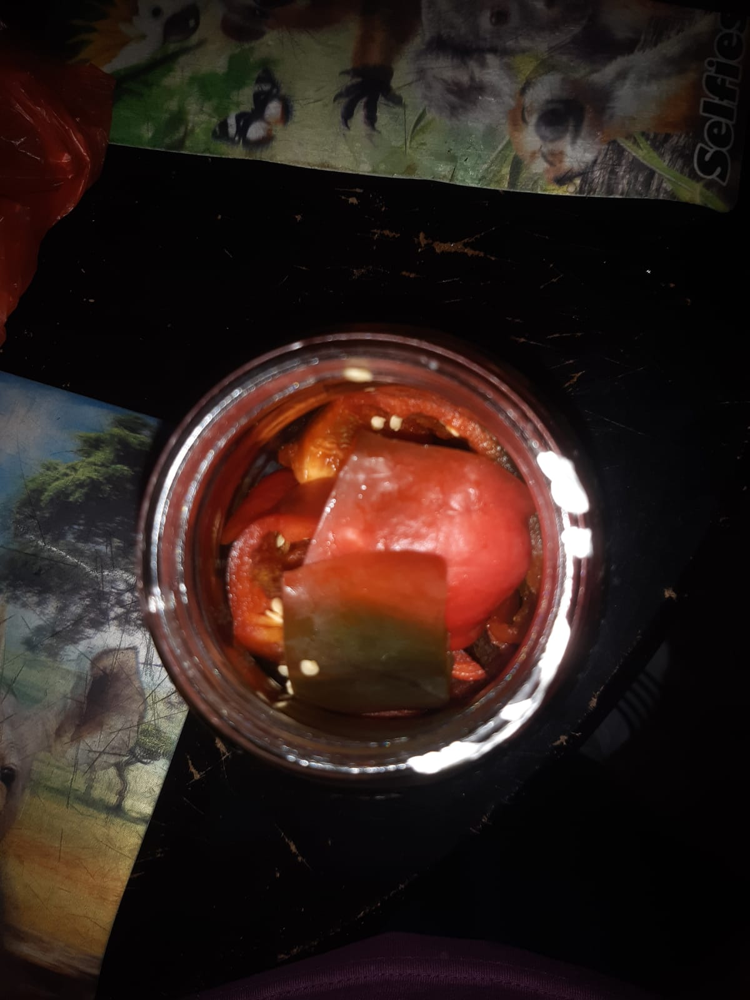
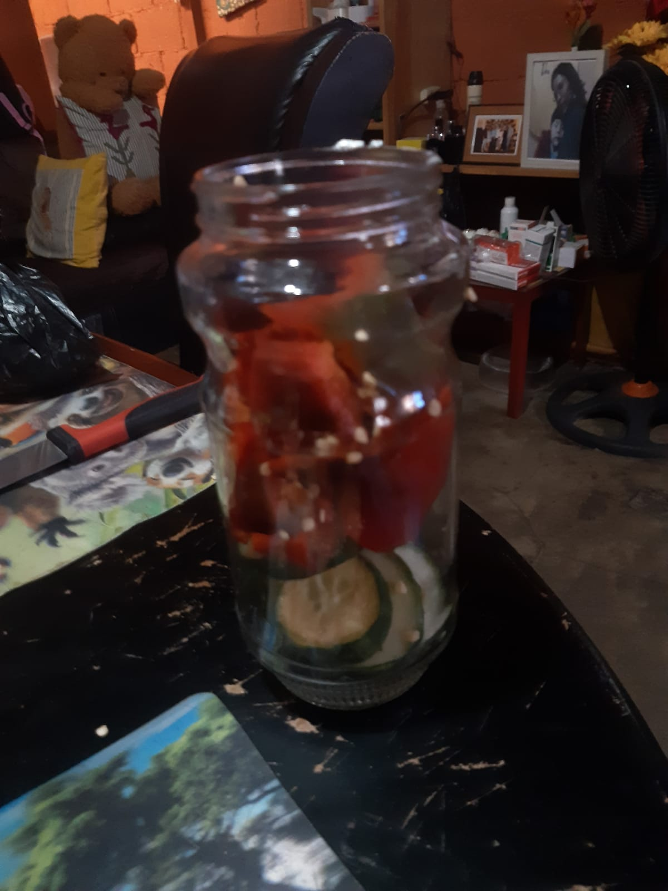
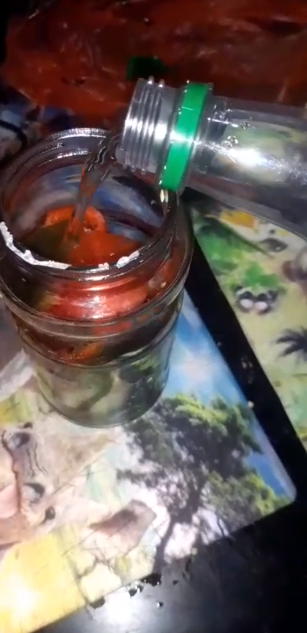
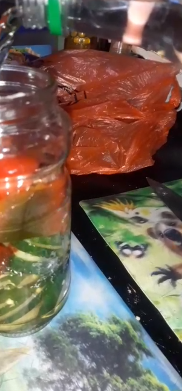

Proyecto de Biología - Encurtidos y Fermentación Láctea
Nombre:
Grado / Sección:
Carné / Matrícula:
Fecha de registro:




Es un proceso bioquímico en el que bacterias benéficas (como Lactobacillus) convierten los azúcares de los alimentos en ácido láctico. Esto conserva el alimento, mejora su valor nutricional y le da un sabor ácido característico.